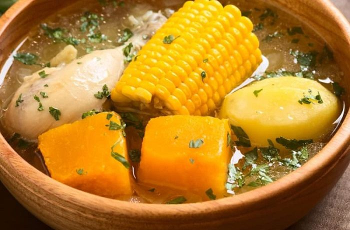

Cazuela

The preferred dish for winter
The protein it's a option, this time gonna be chicken.
If you were born on a chilean family, you should've remember the many times that this dish were prepared.
But if you love the cazuela so much, even on summer you can give it a try (no the best idea imo).
ingredients:
Servings: 5
- 5 chicken thighs
- 5 potatoes
- 5 medium size corns
- a third cup of rice
- 5 medium piece of pumpkins
- In a pot of medium size put cold water and a bit of salt, cook te potatoes and pumpkins between 15 to 20 minutes.
- In another pot, put two tablespoon of oil and add the chicken, be careful that the chicken is well done.
- Add the corns and rice, cook around 20 minutes. Then finally, add the potatoes and pumpkins for the flavor.